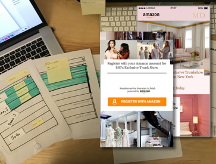

The web portfolio is designed for Amazon internal reviews. Most of the design materials shown in this website, including user experience design and visualization, are captured from the archive of the projects I contributed to as a user experience designer, excluding any design works performed by other designers.
Duration: June. 2015 - Jan. 2016
-
AllSaints UI
Login and Pay with Amazon
-
AllSaints Instore Event
Register and Pay with Amazon
-
Switch Concept
System flow
-
Infographic Design
Icon|Infograph
-
Tiffany
Register online/pickup
-
AO.com UI
Prime benefit
-
Prime Perks Experience
Add new experience on Prime
-

Moda Instore Experience
Hands free check-in/out
-

MFA widget
Payment experience
-
Your account UI
Enhanced merchant page UI
Previous Works
Graduate thesis on IT magazine (click to see)
Publications: Tactile hand gesture recognition through haptic feedback for affective online communication, Hae Youn Joung, Ellen Do, UAHCI'11. (click to see a paper)
Haptic interaction study and application to haptic mobile design for online communication, Hae Youn Joung, Ellen Do, Conference of Creativity and Cognition'11.
Study of affective communication method in tactile hand gesture feedback, Hae Youn Joung, Ellen Do, Conference of Creativity and Cognition'11.
Optimal User Interface Parameters for Dual-sided Transparent Screens in Layered Window Conditions, Hae Youn Joung, Se Young Kim, HCI International'16.
15 patents: 8 UI patents as a first inventor and 7 patents as a second or third inventor (click to see)